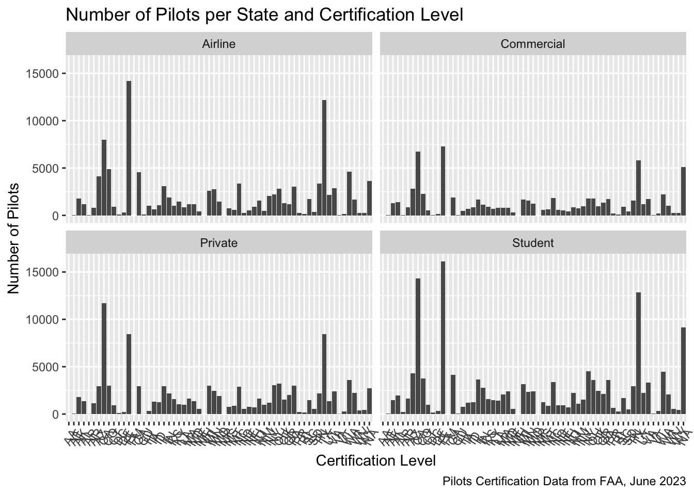
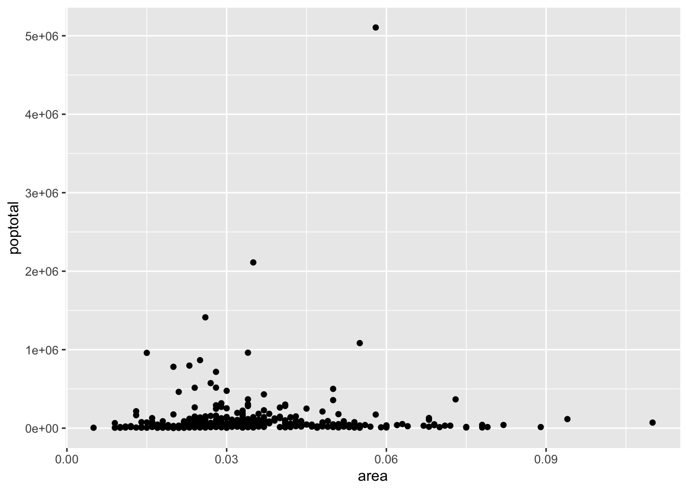
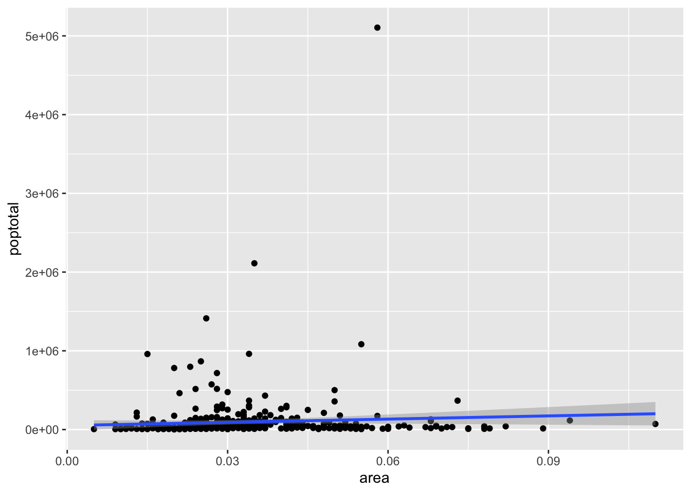

A data is said to be tidy(Wickham 2014) format if each column represents a variable and each row represents an observation. Example of data that is NOTtidy is the relig_income data set in tidyr package:
# load a librarieslibrary(knitr) # fancy tablelibrary(tidyverse) # load library tidyverse# To display fancy tableskable(head(relig_income,10))
religion
<$10k
$10-20k
$20-30k
$30-40k
$40-50k
$50-75k
$75-100k
$100-150k
>150k
Don’t know/refused
Agnostic
27
34
60
81
76
137
122
109
84
96
Atheist
12
27
37
52
35
70
73
59
74
76
Buddhist
27
21
30
34
33
58
62
39
53
54
Catholic
418
617
732
670
638
1116
949
792
633
1489
Don’t know/refused
15
14
15
11
10
35
21
17
18
116
Evangelical Prot
575
869
1064
982
881
1486
949
723
414
1529
Hindu
1
9
7
9
11
34
47
48
54
37
Historically Black Prot
228
244
236
238
197
223
131
81
78
339
Jehovah’s Witness
20
27
24
24
21
30
15
11
6
37
Jewish
19
19
25
25
30
95
69
87
151
162
It is obvious that each column does not represent a variable. Variable salary could be a better fit to the values we have in the columns headings (<$10k, etc.). Another variable can be created to store values in the entry table (27, 34,…). These are the number of time we have a response - counts -. To make it tidy we need then to pivot the values columns into a two-column key-value pair. Let’s name the values in the header income and values in the table counts. To do that we can run the following code:
# pivot a table/data framepivot_longer(relig_income,-religion,names_to='income',values_to ="count") -> tidydata# To display fancy tableskable(head(tidydata,n =12))
religion
income
count
Agnostic
<$10k
27
Agnostic
$10-20k
34
Agnostic
$20-30k
60
Agnostic
$30-40k
81
Agnostic
$40-50k
76
Agnostic
$50-75k
137
Agnostic
$75-100k
122
Agnostic
$100-150k
109
Agnostic
>150k
84
Agnostic
Don’t know/refused
96
Atheist
<$10k
12
Atheist
$10-20k
27
Manipulating data
dplyr package is designed to perform some of the widely used operations when working with data.frame or tibble. - The dplyr Cheet Sheet. When manipulating data, you may want to:
Subset the data to contain only row (observations) you are interested in
Subset the data to contain only columns (variables) you are interested in
Create new variables and add them to the data
aggregate the data
To achieve these operations and more, the package dplyroffers the following functions:
Function
Action
filter()
subset rows
select()
subset variables
mutate()
create a new variable
arrange()
sort
summarize()
aggregate the data
Here is an example:
# pivot a table/data framepivot_longer(relig_income,-religion,names_to='income',values_to ="count") -> tidydata# Select data where income is < $10kkable(head(filter(tidydata,income=="<$10k")))
religion
income
count
Agnostic
<$10k
27
Atheist
<$10k
12
Buddhist
<$10k
27
Catholic
<$10k
418
Don’t know/refused
<$10k
15
Evangelical Prot
<$10k
575
# Select data where income is < $10kkable(head(arrange(tidydata,desc(count))))
religion
income
count
Evangelical Prot
Don’t know/refused
1529
Catholic
Don’t know/refused
1489
Evangelical Prot
$50-75k
1486
Mainline Prot
Don’t know/refused
1328
Catholic
$50-75k
1116
Mainline Prot
$50-75k
1107
Pipe operator %>%
The pipe operator %>% allows us to perform a series of functions without storing the outcomes of each function. For example:
library(dplyr)sqrt(log(25))
[1] 1.794123
#is the same as25%>% log %>% sqrt
[1] 1.794123
We often start with our data and then apply functions sequentially. The benefit of the pipe operator is more evident when dealing with complex operations.
Summarizing data
One of the tasks in statistics is to summarize data. Let’s look into this example using data chickwts about Chicken weights and diet. It has two variables weight and feed:
# Mean and standard deviation of the weightchickwts %>%summarise(mean.weight=mean(weight),s.weight=sd(weight))
mean.weight s.weight
1 261.3099 78.0737
# Mean and standard deviation of the weight by groupchickwts %>%group_by(feed) %>%summarise(mean.weight=mean(weight),s.weight=sd(weight),nbr.chick=n())
ggplot2 package is dedicated to data visualization. It can greatly improve the quality and aesthetics of your graphics, and will make you much more efficient in creating them. gg stands for grammar of graphics.
This link The R Graph Gallery provides a gallery of graphs created using R. A good place to get inspired and learn some advanced visualizations.
Pilot Certification Data
Data obtained from the Federation Aviation Administration (FAA) in June 2023. The records contains:
a unique ID for each pilot,
CertLevel: the certification level (Airline, Commercial, Student, Sport, Private, and Recreational),
STATE: the USA state,
MedClass: the medical class,
MedExpMonth: the medical expire month, and
MedExpYear: the medical expire year.
pilots =read.csv(file ="../datasets/pilotsCertFAA2023.csv")kable(head(pilots))
ID
STATE
MedClass
MedExpMonth
MedExpYear
CertLevel
A0000014
FL
3
10
2023
Airline
A0000030
GA
3
8
2019
Private
A0000087
NH
NA
NA
NA
Airline
A0000113
CA
1
11
2023
Airline
A0000221
AZ
1
8
2023
Airline
A0000232
AZ
1
8
2023
Airline
It seems the number of Recreational and Sport pilots are very small. Lets check it out:
pilots %>%group_by(CertLevel) %>%summarise(Number=n()) %>%kable()
CertLevel
Number
Airline
116163
Commercial
74778
Private
106713
Recreational
67
Sport
5664
Student
147312
Demographic information of midwest counties from 2000 US census:
#Demographic information of midwest counties from 2000 US censuskable(head(midwest))
PID
county
state
area
poptotal
popdensity
popwhite
popblack
popamerindian
popasian
popother
percwhite
percblack
percamerindan
percasian
percother
popadults
perchsd
percollege
percprof
poppovertyknown
percpovertyknown
percbelowpoverty
percchildbelowpovert
percadultpoverty
percelderlypoverty
inmetro
category
561
ADAMS
IL
0.052
66090
1270.9615
63917
1702
98
249
124
96.71206
2.5752761
0.1482826
0.3767590
0.1876229
43298
75.10740
19.63139
4.355859
63628
96.27478
13.151443
18.01172
11.009776
12.443812
0
AAR
562
ALEXANDER
IL
0.014
10626
759.0000
7054
3496
19
48
9
66.38434
32.9004329
0.1788067
0.4517222
0.0846979
6724
59.72635
11.24331
2.870315
10529
99.08714
32.244278
45.82651
27.385647
25.228976
0
LHR
563
BOND
IL
0.022
14991
681.4091
14477
429
35
16
34
96.57128
2.8617170
0.2334734
0.1067307
0.2268028
9669
69.33499
17.03382
4.488572
14235
94.95697
12.068844
14.03606
10.852090
12.697410
0
AAR
564
BOONE
IL
0.017
30806
1812.1176
29344
127
46
150
1139
95.25417
0.4122574
0.1493216
0.4869181
3.6973317
19272
75.47219
17.27895
4.197800
30337
98.47757
7.209019
11.17954
5.536013
6.217047
1
ALU
565
BROWN
IL
0.018
5836
324.2222
5264
547
14
5
6
90.19877
9.3728581
0.2398903
0.0856751
0.1028101
3979
68.86152
14.47600
3.367680
4815
82.50514
13.520249
13.02289
11.143211
19.200000
0
AAR
566
BUREAU
IL
0.050
35688
713.7600
35157
50
65
195
221
98.51210
0.1401031
0.1821340
0.5464022
0.6192558
23444
76.62941
18.90462
3.275892
35107
98.37200
10.399635
14.15882
8.179287
11.008586
0
AAR
# Get started - `area` and `poptotal` are variable in `midwest`ggplot(midwest,aes(x=area,y=poptotal))

What we see here is a blank ggplot! ggplot does not plot by default a scatter or a line chart! We would need to decide next what should we plot! Let’s make a scatter plot.
# add geom_point() to add scatter points to the plotggplot(midwest,aes(x=area,y=poptotal)) +geom_point()
Yaay! we did it. Next, let’s add a linear regression model: \(poptotal = \beta_0 + \beta_1 area\).

To control x and y axis limits, we can use xlim() and ylim() as follows:

Notice that the line we obtain here is different from the line from the first fit (all data included). This happens because ggplot will refit the model lm() to data without the observations that are outside the ranges. This is useful if we want to examine changes in the model line when extreme values (or outliers) are removed.
We can also keep the model as the original plot and zoom in using:
Let’s Add some fancy options:
Wow! What about adding a new variable to the plot! For example, adding state variable. Let’s change the color to match the state where a data point belongs to; state is a variable in the midwest dataset.
And more…
Lessons of this week provide more about tidyverse. The following will be covered more in details:
Data manipulation (filter, select, mutate, arrange, summarize, and etc.)
ggplot2 package for data visualization.
An extended example
🛎 🎙️ Recordings on Canvas will cover more details and examples! Have fun learning and coding 😃! Let me know how I can help!